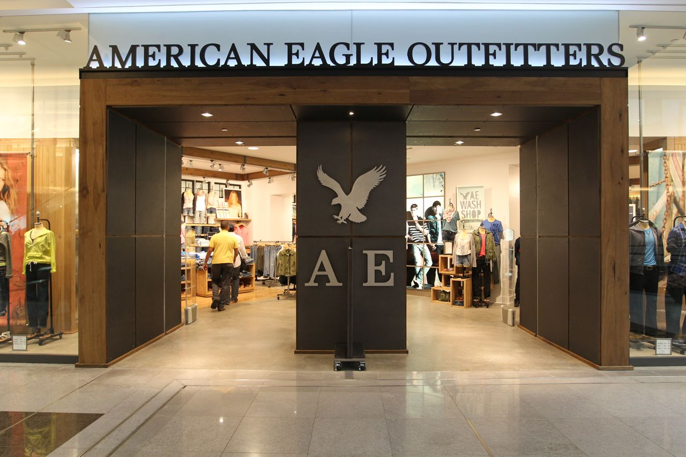

American Eagle Outfitters
American Eagle Outfitters is an American clothing and accessories retailer, headquartered in Pittsburgh, Pennsylvania. It was founded in 1977 by brothers Jerry and Mark Silverman as a subsidiary of Retail Ventures, Inc., a company which also owned and operated Silverman's Menswear. The Silvermans sold their ownership interests in 1991. American Eagle is the parent company of Aerie and formerly of 77 kids.
The brand targets 15- to 25-year-old males and females, with 911 American Eagle Outfitters stores and 158 Aerie stand-alone stores. In 1977, the first American Eagle store opened in Twelve Oaks Mall in Novi, Michigan.
Some of the brand's more popular products are low-rise jeans, polo shirts, graphic T-shirts, henley shirts, boxers and briefs, outerwear, and swimwear.
Development
American Eagle Outfitters, Green Oak Village Place
An 'American Eagle Outfitters' store in the mall SM Aura Premier in Bonifacio Global City, Metro Manila, Philippines American Eagle's beginning began with the Silverman family, which owned and operated Silvermans Menswear. By the mid-1970s two of the Silverman brothers—from the third generation of Silvermans in the family business—were running the family business. Jerry Silverman, was the president and CEO, while his brother Mark Silverman, served as executive vice-president and COO. The Silverman brothers were convinced they needed to diversify their product offerings in order to continue growing their company. They also recognized that the addition of new family owned chains would then enable them to operate more than one store in the same mall. Their first attempt was to open American Eagle Outfitters in 1977, positioning it as a proprietor of brand-name leisure apparel, footwear, as well as accessories for men and women, emphasizing merchandise suited for outdoor sports, such as hiking, mountain climbing, and camping.[5] Stores were set up in shopping malls and a catalog was established. The chain grew for much of the 1980s. In 1989, the owners decided to refocus their business on American Eagle Outfitters, selling their other retail chains. At that time, there were 137 American Eagle Outfitters stores including 37 in the United States.
Despite the plans for quick growth after the reorganization, American Eagle Outfitters opened only 16 new stores by 1991 and the company was losing money. At this point, the Schottensteins, who had been 50% owners of the chain since 1980, bought out the founding Silverman family's interest. This change in leadership resulted in American Eagle finding its present niche: casual clothing for men and women selling private label clothes. AE opened the first Canadian store in 2001.
When the company began trading on the NASDAQ stock exchange in the second quarter of 1994, it had 167 stores and a healthy cash flow. With the cash infusion from the IPO, the company opened more than 90 new stores within the next year. Several new executives joined the company in 1995 and '96, leading to another change in the target demographic. The company now wanted to reach more women and focus on people between the ages of 18 and 32.[citation needed] The strategy workedand over the next five years, revenues quintupled to $1 billion by 2000. As of January 28, 2012, American Eagle operated 911 American Eagle Outfitters stores, 158 aerie stand-alone stores and 21 77kids stores. The company also had 21 franchised stores operated by franchise partners in 10 countries. On January 22, 2014, then-CEO Robert Hanson stepped down and Jay Schottenstein became interim CEO.
Finances and Operations
On March 10, 2005, The company adjusted its accounting of rent expenses and construction allowances after the Securities and Exchange Commission noted that a number of companies had been improperly logging these items. Due to disappointing product execution in the women's category
, American Eagle posted only a 3% gain in the 2013 second quarter profits and the stock price dropped.
Corporate and headquarters
In mid-2007, American Eagle Outfitters moved its headquarters from Warrendale, Pennsylvania to a more urban location at the SouthSide Works complex in Pittsburgh. The cost of the buildings and adjacent property was approximately $21 million (excluding interior finishing and additional construction costs). The addresses of the buildings are
Staffing partnership
In June 2008, the company signed an exclusive staffing agreement with JBCStyle. This agreement encompassed all of American Eagle Outfitters' freelance staffing needs in New York City as well as any outsourced permanent search. The company has opted to engage JBCStyle's sister Company Jonathan Beth Consultants to manage payroll for all corporate hourly employees. American Eagle Outfitters has renewed its agreement with JBCStyle for two subsequent years.
Franchise agreement
In June 2009, the company signed the franchisee agreement with M. H. Alshaya, one of the leading retailers of the Middle East.[11] The agreement will see the introduction of the first stores outside the North American market, with the first two opening in Dubai and Kuwait on March 16 and March 25, 2010, respectively and a store which opened on October 15, 2011 in Kaslik near Beirut, Lebanon, another store opening followed in June 2012 in Hamra Street, Beirut; one more store is scheduled to open in 2013, in Hazmieh.
Stores and other brands
Click the left arrow to see content
- Aerie
- Martin + Osa
- 77Kids